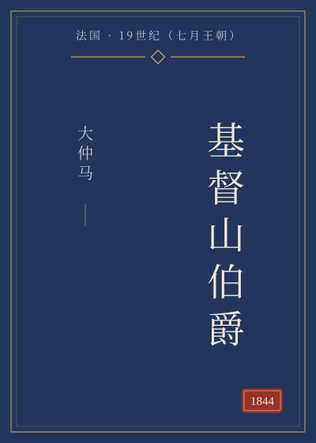
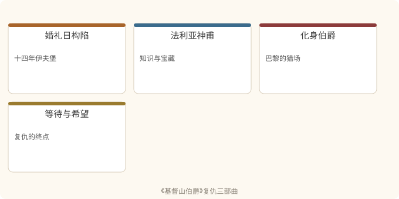

基督山伯爵
一、基本信息
| 作者 | 大仲马 |
|---|---|
| 成书/出版 | 1844—1845年连载出版（Britannica：Le Comte de Monte Cristo (1844–45)） Alexandre Dumas pere — Encyclopaedia Britannica（百科全书） |
| 国别/地区 | 法国 |
| 时代 | 近代 · 19世纪（七月王朝） |
| 体裁 | 长篇小说 |
| 语言 | 法语 |

《基督山伯爵》复仇三部曲（主题·结构图）
二、创作背景
Britannica：大仲马为'highly prolific and popular'的19世纪法国作家，《基督山伯爵》与《三个火枪手》为其最著名作品；'often working with collaborators (especially Auguste Maquet)'。
报章连载体：为偿债'forced to write more and more rapidly'（Britannica）——通俗连载的黄金形态。
三、内容脉络
水手唐泰斯在婚礼日遭嫉妒者构陷入狱十四年——伊夫堡（通说）。
狱中得法利亚神甫传授学识与宝藏所在；越狱后化身基督山伯爵逐个复仇（通说）。
终局：复仇完成，宽恕与远行（通说待核）。
四、主要人物表
| 人物 | 身份 | 说明 |
|---|---|---|
| 唐泰斯（基督山伯爵） | 水手→伯爵 | 复仇的化身（通说） |
| 维尔福等 | 告密者三人组 | 法官·银行家·军官（通说） |
| 法利亚神甫 | 狱友 | 知识与宝藏的授予者（通说） |
五、主题与艺术特点
- 复仇的经济学：等待与希望（书末名句通说待核——'wait and hope'）。
- 身份与变身：复仇者的多重面具（通说）。
- 报章连载的叙事速度（Britannica 语境）。
六、影响与评论
- Britannica：《基督山伯爵》与《三个火枪手》为其 best-known works。
Alexandre Dumas pere — Encyclopaedia Britannica（百科全书） - 通俗历史小说的范本：对后世类型小说（武侠/复仇叙事）的深远影响（通说待核）。
Alexandre Dumas pere — Encyclopaedia Britannica（百科全书）
七、阅读建议
难点
- 体量巨大（两卷本）。
- 法政史背景（拿破仑百日/七月王朝）。
- 周克希/韩沪麟译本（上海译文出版社，通说待核）。
- 蒋学模译本（人民文学出版社，通说待核）。
顺情节通读；狱中一章（法利亚）为精神枢纽。
八、待核实
- 连载起止日期（1844年8月—1846年1月《辩论报》说）待核。
- 书末'等待和希望'原文核对。
- 马凯贡献份额争议待核。
本页主要来源
大仲马的其他收录作品：基督山伯爵